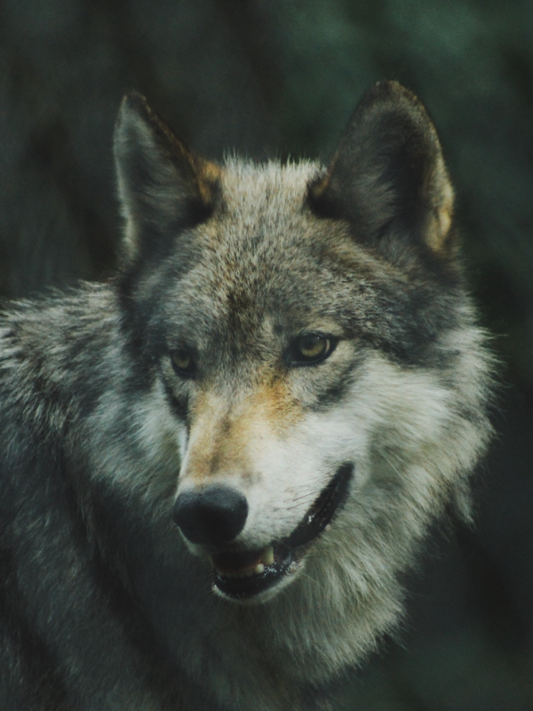
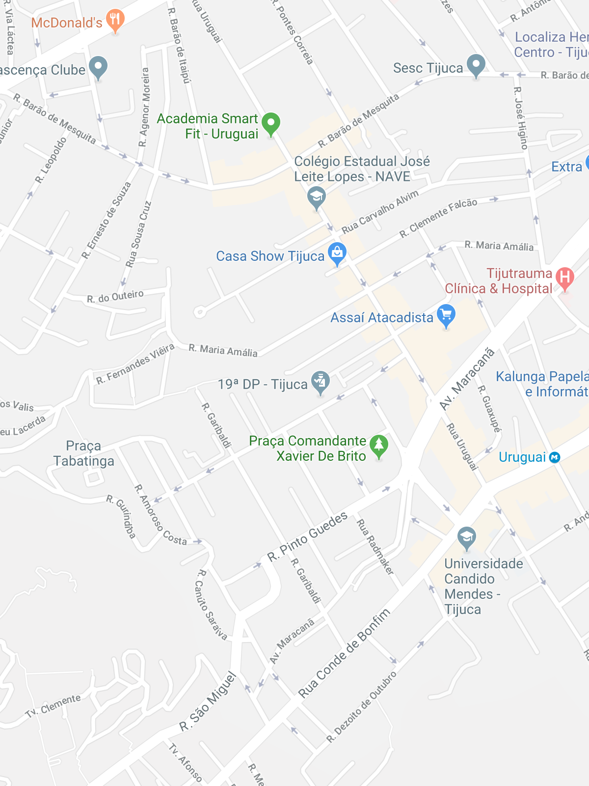

Animais Fantásticos
-

-

-

-

-

-

Raposa
As raposas são mamíferos onívoros da família Canidae, a mesma dos cães e lobos. Possuem focinho alongado, orelhas pontudas e uma cauda longa e peluda, que ajuda no equilíbrio durante as corridas.
Alimentam-se de pequenos animais, insetos, frutas e vegetais. Essa dieta variada permite que vivam em florestas, campos, desertos e até em áreas urbanas.
Costumam caçar ao amanhecer e ao anoitecer, usando a audição apurada para localizar roedores sob a grama ou a neve. Quando encontram a presa, saltam sobre ela de cima para baixo.
Descansam e criam os filhotes em tocas, que podem cavar ou reaproveitar de outros animais. Ao controlar populações de roedores e insetos, ajudam a manter o equilíbrio do ambiente.
Esquilo
Os esquilos são pequenos roedores da família Sciuridae, conhecidos pela agilidade, pela cauda volumosa e pela habilidade de escalar árvores.
Alimentam-se de sementes, nozes, frutas e cogumelos. Muitas espécies enterram comida para os períodos de escassez e, como nem sempre encontram tudo depois, acabam plantando novas árvores.
A cauda serve para o equilíbrio nos saltos, mas também protege do frio e da chuva. Seus dentes da frente nunca param de crescer, por isso precisam roer o tempo todo.
Urso
Os ursos são grandes mamíferos da família Ursidae, com corpo robusto, pelagem espessa, patas fortes e garras poderosas. Existem oito espécies, entre elas o urso-pardo, o urso-negro e o urso-polar.
A maioria tem dieta onívora e come frutas, raízes, folhas, peixes e pequenos animais. O urso-polar é a exceção: alimenta-se principalmente de focas e é um dos maiores carnívoros terrestres do mundo.
O olfato é o sentido mais desenvolvido e permite encontrar comida a quilômetros de distância. Apesar do tamanho, são excelentes nadadores e capazes de correr em alta velocidade por curtos trechos.
Nas regiões frias, passam o inverno em tocas, em um estado de sono profundo chamado hibernação. Antes disso, acumulam grandes reservas de gordura durante o verão e o outono.
Habitam florestas, montanhas e regiões polares. Ao se alimentarem de frutos e espalharem as sementes pelas fezes, contribuem para a renovação da vegetação.
Lobo
O lobo-cinzento é um mamífero carnívoro da família Canidae e o maior canídeo selvagem. Possui pelagem densa, focinho alongado, patas resistentes e uma enorme capacidade de percorrer longas distâncias.
Vive em grupos familiares chamados alcateias, que geralmente reúnem de seis a dez indivíduos. Cada membro tem seu papel, e a cooperação é essencial para a caça de grandes presas, como cervos e alces.
A comunicação acontece por posturas corporais, expressões faciais e uivos, que podem ser ouvidos a vários quilômetros. Os uivos ajudam a reunir o grupo e a marcar território.
Como predador de topo, o lobo regula as populações de herbívoros. Quando foi reintroduzido no Parque de Yellowstone, nos Estados Unidos, a vegetação e os rios da região também se recuperaram.
Macaco
Os macacos são mamíferos primatas encontrados principalmente em regiões tropicais, conhecidos pela inteligência, pela agilidade e pelo comportamento social.
A alimentação varia conforme a espécie e inclui frutas, folhas, sementes, insetos e pequenos animais. Muitas espécies vivem em grupos e usam vocalizações e gestos para se comunicar e avisar sobre perigos.
Algumas espécies sul-americanas, como o macaco-aranha, têm a cauda preênsil, que funciona quase como uma quinta mão para se segurar nos galhos.
Leão
O leão é um mamífero carnívoro da família Felidae, conhecido pela força e pela juba característica dos machos adultos. É um dos maiores felinos do planeta.
Encontrado principalmente na África, vive em grupos chamados bandos, formados por fêmeas aparentadas, seus filhotes e alguns machos. Há também uma pequena população na Índia, na floresta de Gir.
As leoas realizam a maior parte das caçadas, trabalhando em equipe para cercar zebras, antílopes e búfalos. Os machos defendem o território e protegem o bando de ameaças.
O rugido pode ser ouvido a até oito quilômetros de distância. Os leões descansam por até vinte horas por dia, guardando energia para as caçadas.
FAQ
- Qual a idade dos animais?
- A idade varia conforme a espécie. Raposas e esquilos vivem de 3 a 10 anos na natureza, enquanto ursos e leões podem passar dos 20.
- Eles são fantásticos?
- Com certeza! Cada espécie tem adaptações incríveis, como o olfato dos ursos, o uivo dos lobos e a agilidade dos macacos.
- Qual a diferença?
- Os dois são canídeos, mas o lobo é bem maior, vive em alcateias e caça presas grandes. A raposa é menor, costuma ser solitária e come de tudo um pouco.
- Como proteger?
- Preservando seus habitats, evitando o descarte incorreto de lixo, não alimentando animais selvagens e apoiando projetos de conservação.
Números
Contato

- contato@origamid.com
- +55 (21) 9999-9999
- Rua do Conde, nº 21
- Rio de Janeiro - RJ
- Doe 0 bitcoin para nos ajudar
- Seg à Sex das 8 às 18